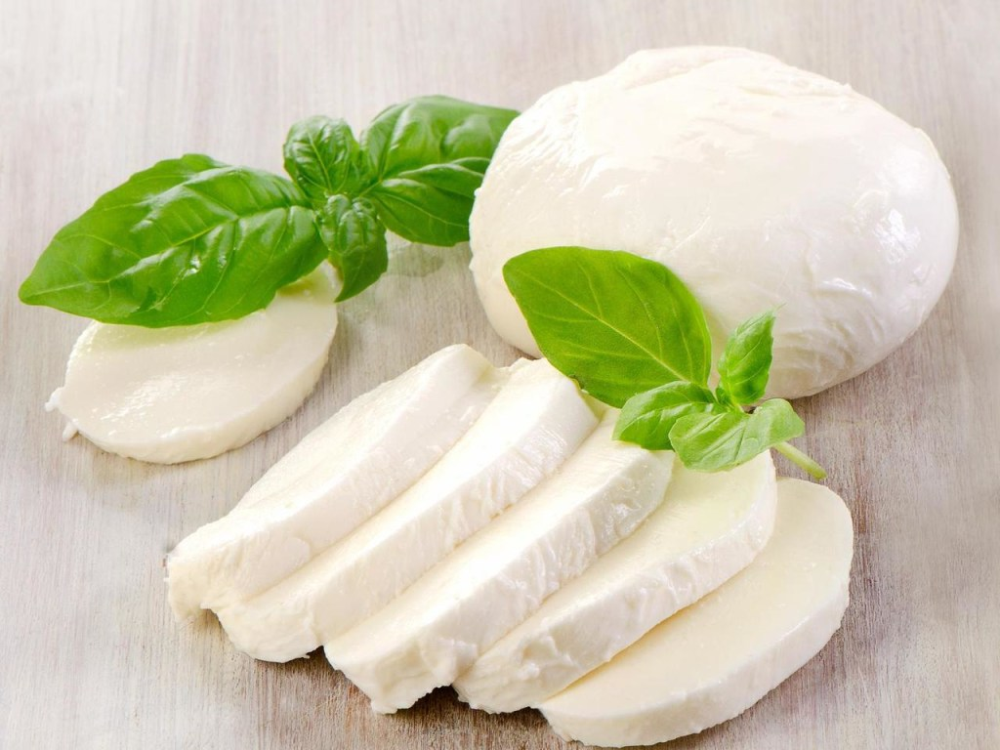

Здравствуйте, уважаемые посетители нашего сайта! Всю необходимую информацию можно получить из наших источников.
При возникающих ошибках вы можете обратиться в службу поддержки
МОЦАРЕЛЛА

400 руб
Моцарелла — это классический итальянский мягкий рассольный сыр.
Первые упоминания в литературе об этом виде сыра относятся к эпохе Возрождения.
В 1570 году сыр моцарелла в качестве одного из ингредиентов входил в состав многих блюд в
книге известного в то время итальянского повара Бартоломео Скаппи.
Название сыра происходит от итальянского слова «моццаре»,
что означает резать: в процессе изготовления этого сыра есть этап нарезки сырья.
Моцареллу очень любят как в Италии, так и во всем мире.
Гауда – это голландский сыр полутвердого сорта с нежным сливочным вкусом
и долей жира от 48 до 50%. Для классического рецепта используют коровье молоко,
хотя некоторые производители вместо него берут козье либо овечье.
Говорят, что первое письменное упоминание об этом продукте можно найти еще в записях
о сражениях Юлия Цезаря, который, если верить преданию, ценил гастрономические характеристики этого
продукта. Хотя многие исследователи кулинарной истории утверждают, что Цезарь употреблял все-таки не гауду,
а какой-то другой сыр. «Рождение» гауды связывают с одноименным голландским городом, а тот появился на карте мира только
в XIII веке. Правда, существует и другая версия, согласно которой не сыр назвали в честь города, а наоборот – населенный пункт
Гауда получил свое название благодаря сыру, который издревле делали на этой территории. Кстати, в Гауде и сегодня, точно так,
как и в Средние века, каждый четверг работает ярмарка сыров, где, как и много веков назад, можно с первых рук купить головку настоящего деликатеса.
По древней традиции, на торговой площади собираются фермеры и, торгуясь, каждый выкрикивает свою цену.
Окончательную сделку «закрепляют», хлопая друг друга в ладони.
Российский сыр является одним из самых любимых полутвердых сыров на территории нашей страны.
Этот продукт «родился» в НИИ сыродельной промышленности в 60-х годах прошлого века. Однажды попав на прилавки,
российский сыр с каждым годом становился все популярнее.
Если сразу после создания рецепта сыр выпускался только одним сыродельным заводом в Угличе,
то растущее его потребление вынудило профильное министерство распространить технологию производства на многие другие
сыродельные заводы и комбинаты в России, Беларуси, Украине и странах Прибалтики, которые и сегодня являются основными
производителями сыра этого сорта.
Сейчас на полках супермаркетов все чаще можно встретить широкое разнообразие дорогих сыров
с плесенью. Видов их довольно много: существуют и с голубой и с белой плесенью, твердые и мягкие, итальянские
и французские. Но последнее время сердце покупателей стал завоевывать сравнительно молодой их аналог – немецкий
голубой сыр дорблю. Причем это имя настолько прочно вошло в обиход, что многие наши соотечественники, не особо
разбирающиеся в сортах и видах сыра, стали так называть любой сыр с голубой плесенью. Но мало кто знает, что помимо
своего аристократического вкуса и характерного пряного запаха, этот сыр обладает и другими достоинствами.
Вообще сыры с плесенью известны довольно давно. Их история насчитывает не одно столетие.
У французов существует легенда, согласно которой появление сыров с голубой плесенью приписывают некоему
молодому пастушку Рокфору. Собираясь пообедать, пастух увидел прекрасную незнакомку и она настолько запала
ему в душу, что он, забыв об обеде, бросился ей вслед. А назад вернуться смог только спустя несколько дней.
По возвращении он нашел в пещере нетронутым свой оставленный обед – обросший плесенью сыр. Но это не вызвало
у него отвращения: из любопытства он отломил кусочек странного блюда и попробовал его. Каково же было его удивление,
когда он понял, что испорченный с виду сыр, оказался изысканным и нежным на вкус.